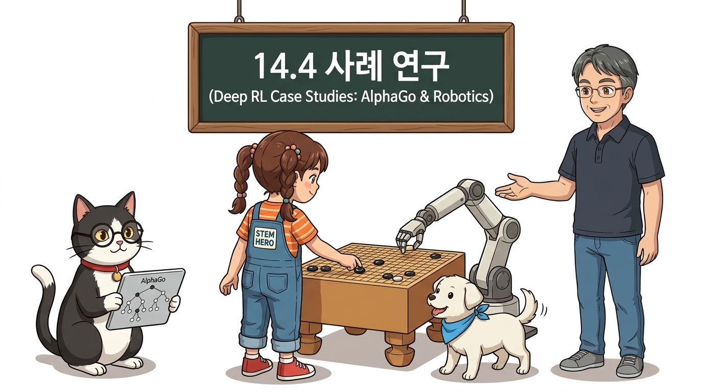
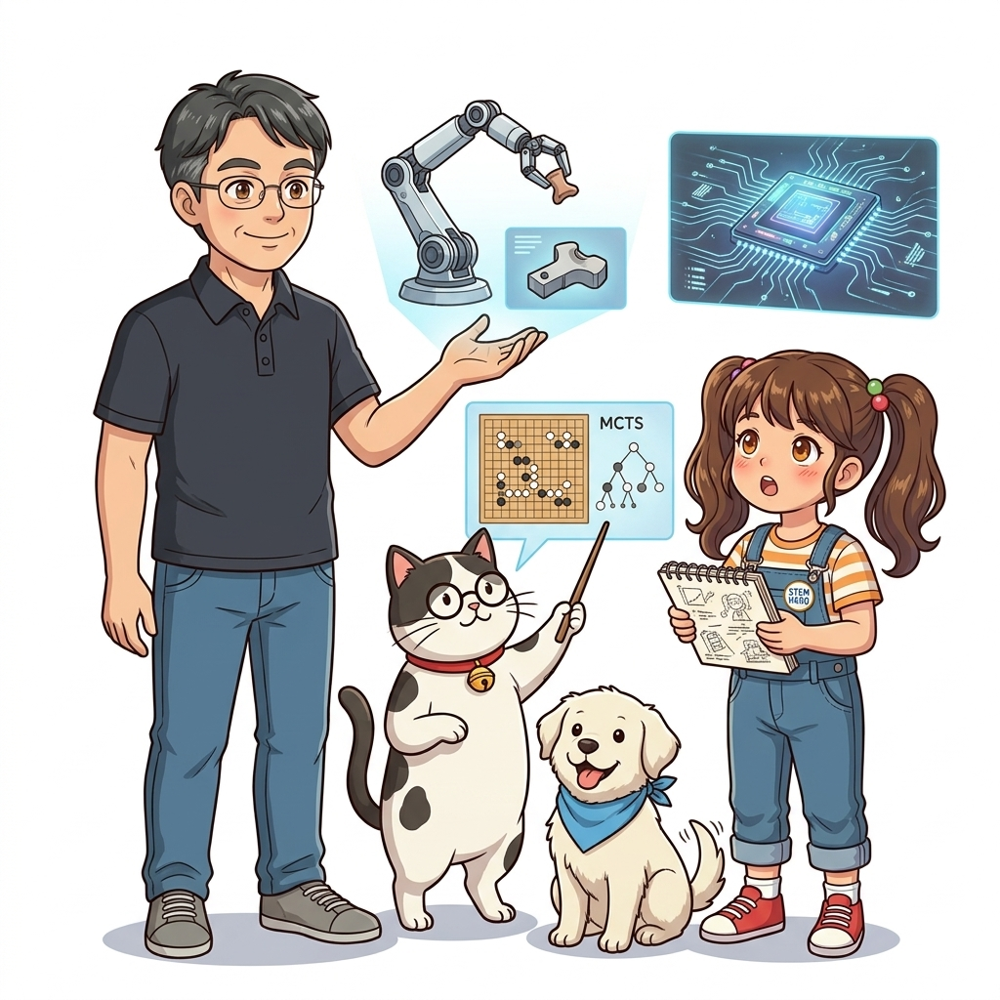
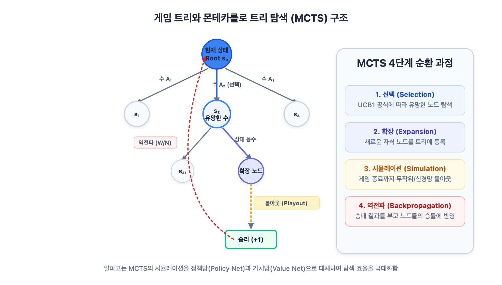
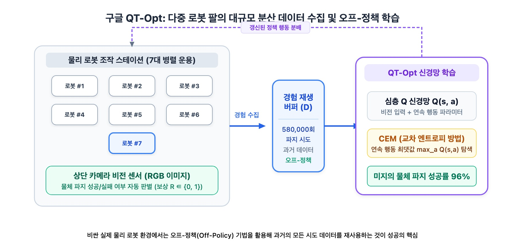
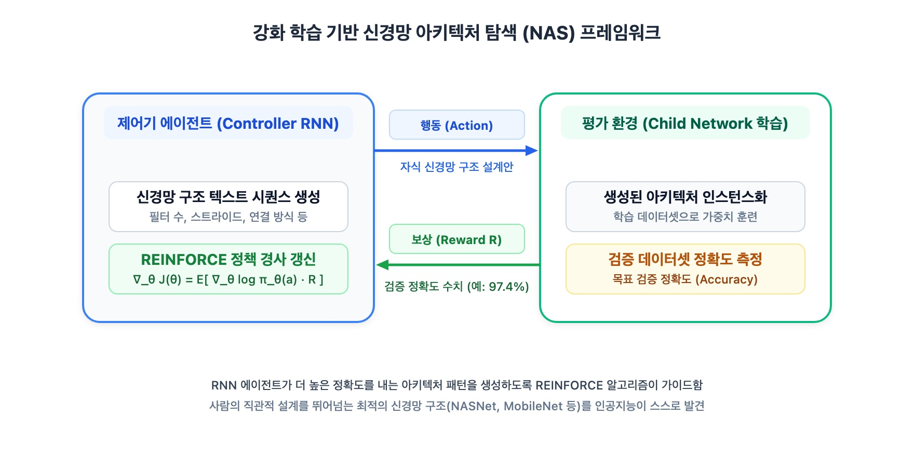

14.4 사례 연구
그림 14-5 바둑판(알파고), 로봇 제어, 반도체 칩 설계 등 현실 및 가상 세계의 정복 사례들을 칠판에 붙이며 설명해주는 지니와 눈이 반짝이는 도로시

인공지능 연구가 실험실의 시뮬레이션을 넘어 실생활과 산업에 적용되어 기적 같은 혁신을 불러일으킨 역사적 사례 연구(Case Study)들을 깊이 있게 해부합니다. 이세돌 9단과의 세기의 대결을 승리로 이끈 알파고(AlphaGo)의 몬테카를로 트리 탐색(MCTS) 메커니즘부터 실제 로봇 팔 제어, 반도체 칩 설계, 그리고 최신 생성형 AI의 인간 피드백 강화학습(RLHF)까지 강화학습이 도달한 위대한 정점들을 도로시, 지니 조교와 함께 생생하게 탐구해봅시다!
심층 강화학습은 아타리 비디오 게임이나 바둑판 같은 가상 세계의 장난감을 넘어, 오늘날 인류의 물리 세계와 산업 전반을 근본적으로 혁신하고 있습니다. 가장 기념비적인 핵심 성공 사례들을 살펴보겠습니다.
그림 14-15 초인적 지능을 증명한 알파고부터 물리 로보틱스 조작, 차세대 AI 반도체 칩 설계, 그리고 초거대 언어 모델 정렬에 이르는 심층 강화학습의 혁신 사례들

14.4.1 보드 게임: 지적 탐색의 정점과 알파고의 진화
바둑, 체스, 장기, 오셀로 같은 클래식 보드 게임은 세 가지 뚜렷한 수학적 특성을 가집니다:
- 완전 정보 게임 (Perfect Information): 바둑판 위의 모든 돌의 배치가 양쪽 플레이어에게 100% 투명하게 공개됩니다.
- 제로섬 (Zero-Sum): 한쪽의 이득은 정확히 상대방의 손실이며, 승자와 패자가 명확히 갈립니다.
- 결정적 환경 (Deterministic): 주사위 같은 우연 요소가 전혀 없이 돌을 놓는 즉시 상태가 100% 결정됩니다.

천문학적인 게임 트리(Game Tree)의 복잡도
보드 상태를 노드로, 다음 둘 수 있는 수(착점)를 간선으로 펼친 것을 게임 트리라고 부릅니다. 모든 경우의 수를 트리로 끝까지 펼칠 수만 있다면 5장에서 배운 동적 프로그래밍의 미니맥스(Minimax) 탐색으로 100% 필승법을 찾을 수 있습니다.
[!NOTE] 게임 트리에서 가능한 총 상태(우주적 복잡도) 비교:
- 오셀로: 약 $10^{58}$ 개
- 체스: 약 $10^{123}$ 개 (관측 가능한 전 우주의 원자 수인 $10^{80}$ 개보다 훨씬 큼)
- 장기: 약 $10^{226}$ 개
- 바둑: 약 $10^{400}$ 개 이상!
바둑판의 경우의 수 $10^{400}$ 개는 우주의 모든 원자를 컴퓨터로 만들어 우주의 시작부터 계산해도 단 1%도 펼쳐볼 수 없는 무한에 가까운 숫자입니다. 컴퓨터가 바둑에서 인간을 이기는 것은 영원히 불가능하다는 것이 2010년대 초반까지 학계의 정설이었습니다.
1) 알파고 (AlphaGo, 2016): MCTS와 딥러닝의 결합
2016년 딥마인드의 데미스 하사비스 연구팀이 개발한 알파고(AlphaGo)[35]는 몬테카를로 트리 탐색(MCTS)에 심층 신경망을 결합하여 이 불가능을 돌파했습니다:
- 정책 신경망 (Policy Network): 19×19 바둑판 이미지를 입력받아, 다음에 둘 만한 가장 유망한 후보 수 몇 가지만을 좁혀서 제시합니다 (트리의 너비를 대폭 가지치기).
- 가치 신경망 (Value Network): 현재의 바둑판 형세가 흑과 백 중 누구에게 몇 %의 확률로 유리한지 스칼라 승률을 즉각 추정합니다 (트리의 깊이를 가지치기).
- MCTS와의 결합: 무작위 롤아웃 대신 신경망의 정밀한 정책과 가치 평가를 지침 삼아 심층 트리 탐색을 수행했습니다.
알파고는 먼저 16만 개의 인간 프로기사 기보를 지도학습한 뒤, 수천만 번의 셀프 플레이(Self-Play, 자신과의 대국) 강화학습을 거쳐 이세돌 9단과의 역사적 대국에서 4:1로 승리했습니다.
2) 알파고 제로 (AlphaGo Zero, 2017): 인간 지식의 완전한 초월
오리지널 알파고는 여전히 인간의 기보를 초기 교재로 활용했습니다. 하지만 2017년의 알파고 제로[36]는 인간의 기보를 단 한 판도 보지 않고(Tabula Rasa), 오직 바둑 규칙만을 아는 백지상태에서 시작했습니다:
- 정책망과 가치망을 하나의 ResNet(잔차 신경망) 구조로 통일했습니다.
- 무작위 플레이아웃을 완전히 없애고 순수한 신경망 추론과 MCTS 탐색만으로 셀프 플레이를 거듭했습니다.
- 결과: 단 3일간의 독학만으로 이세돌 9단을 이긴 오리지널 알파고를 100대 0으로 완벽하게 격파했습니다. 인간이 수천 년 동안 쌓아온 바둑의 정석과 패러다임이 인공지능에게는 오히려 국소 최적해(Local Optimum)에 갇히게 만드는 족쇄였음이 증명된 것입니다.
3) 알파제로(AlphaZero)와 뮤제로(MuZero)
- 알파제로 (2018): 동일한 단일 신경망 알고리즘으로 바둑, 체스, 일본 장기(Shogi)의 세계 챔피언 프로그램을 훈련 시작 몇 시간 만에 모조리 제압하며 보드 게임의 종결자가 되었습니다.
- 뮤제로 (MuZero, 2020): 심지어 게임의 규칙조차 알려주지 않고, 스스로 환경의 역학(잠재 세계 모델)을 학습하여 바둑뿐만 아니라 시각 정보만 주어지는 아타리 비디오 게임까지 동시에 평정했습니다.
14.4.2 피지컬 AI와 로봇 조작 제어
가상 시뮬레이터에서는 실패해도 시스템을 리셋하면 그만이지만, 현실 세계의 로봇은 넘어지거나 충돌하면 모터가 타버리고 수억 원짜리 기계가 파손됩니다.

QT-Opt: 대규모 로봇 팜의 오프-정책 학습
구글은 7대의 실제 산업용 로봇 팔을 수개월 동안 24시간 연속 운용하여 80만 번 이상의 물건 집기(Grasping) 데이터를 수집했습니다[38]:
- QT-Opt: 카메라 시각 센서로부터 연속 관절 토크를 제어하는 대규모 분산 Q-러닝 알고리즘입니다.
- 오프-정책의 힘: 과거에 실패했거나 이전 버전의 구형 정책이 수집했던 수십만 건의 경험 데이터를 버리지 않고 경험 재생 버퍼에 모두 집어넣어 재활용했습니다.
- 성과: 난반사가 심한 투명 유리병, 형태가 찌그러지는 헝겊 인형 등 생전 처음 보는 미지의 물체도 96%의 압도적인 성공률로 집어 올리는 데 성공했습니다.
14.4.3 신경망 구조 탐색 (NAS, Neural Architecture Search)
“신경망을 만드는 최적의 신경망 구조는 사람이 직접 짜야만 하는가?”라는 질문에 강화학습이 혁신적인 답을 내놓았습니다.

구글 브레인의 조프(Barret Zoph)와 레(Quoc V. Le)는 신경망 구조 자체를 생성하는 RNN 에이전트를 고안했습니다[40]:
- 에이전트의 행동: 레이어의 필터 크기, 스트라이드, 잔차 연결 여부 등의 구조를 텍스트 코드로 생성
- 환경의 보상: 생성된 자식 신경망을 실제로 학습시킨 후 검증 데이터셋에서 측정한 최종 인식 정확도
- 정책 갱신: REINFORCE 정책 경사법을 사용하여, 더 높은 성능을 내는 아키텍처를 출력하도록 RNN을 갱신
이렇게 발견된 아키텍처(NASNet, MobileNetV3 등)는 인간 엔지니어가 수년간 고민해 온 수동 설계를 가뿐히 뛰어넘는 놀라운 경량화와 정확도를 달성했습니다.
14.4.4 산업과 생성형 AI로의 거대한 확장
1) 초미세 반도체 칩 배치 설계 (Chip Floorplanning)
스마트폰과 서버에 들어가는 최신 반도체 칩은 수십억 개의 트랜지스터와 수만 개의 메모리 블록을 손톱만 한 실리콘 기판 위에 최적 배치해야 합니다.
배선 길이가 길어지면 전력 소비가 급증하고 발열이 심해집니다. 인간 베테랑 설계자 팀이 달라붙어도 수개월이 걸리던 이 고난도 바둑판 배치를 구글은 강화학습 에이전트에 맡겼습니다[46]:
- 칩 배치를 하나의 거대한 게임으로 모델링하고 에이전트가 블록을 배치하도록 훈련.
- 단 6시간 만에 인간 최고 전문가가 몇 달간 작업한 것보다 배선 길이와 전력 효율이 모두 우수한 칩 레이아웃을 완성하여, 구글의 AI 전용 가속기인 TPU v4/v5 제작에 직접 적용되었습니다.
2) 데이터센터 및 스마트 빌딩 에너지 40% 절감
구글은 전 세계 데이터센터의 냉각 펌프, 칠러, 냉각탑의 수천 개 제어 밸브를 심층 강화학습 에이전트에 맡겼습니다. 외부 기온과 서버 부하 변동을 실시간으로 감지하여 냉각 효율을 최적화함으로써 데이터센터 냉각 전력 소비를 무려 40% 절감하는 놀라운 성과를 거두었습니다.
3) LLM의 심장: 인간 피드백 기반 강화학습 (RLHF)
오늘날 전 세계를 뒤흔들고 있는 ChatGPT, Claude, Gemini와 같은 대규모 언어 모델(LLM)이 인간의 지시를 고분고분 따르고 안전하고 윤리적인 답변을 생성할 수 있는 결정적 비결은 무엇일까요?
바로 14.2절에서 배운 PPO(Proximal Policy Optimization) 기반의 RLHF(Reinforcement Learning from Human Feedback)입니다!
- 에이전트 (정책망): 거대 언어 모델 (LLM)
- 행동 (Action): 문맥에 맞춰 다음에 출력할 토큰(단어)들의 시퀀스
- 보상 (Reward): 인간의 선호도를 흉내 내도록 훈련된 보상 모델(Reward Model)의 점수
- 최적화: PPO를 통해 언어 모델이 본래의 문장 구사력(KL 발산 제약)을 잃지 않으면서도, 인간에게 가장 도움이 되고 안전한 답변을 출력하도록 파라미터를 미세조정(Fine-Tuning)합니다.
결국 현대 생성형 AI 혁명의 가장 깊은 엔진실 속에서도, 우리가 지금까지 배운 강화학습의 원리가 힘차게 고동치고 있는 것입니다!